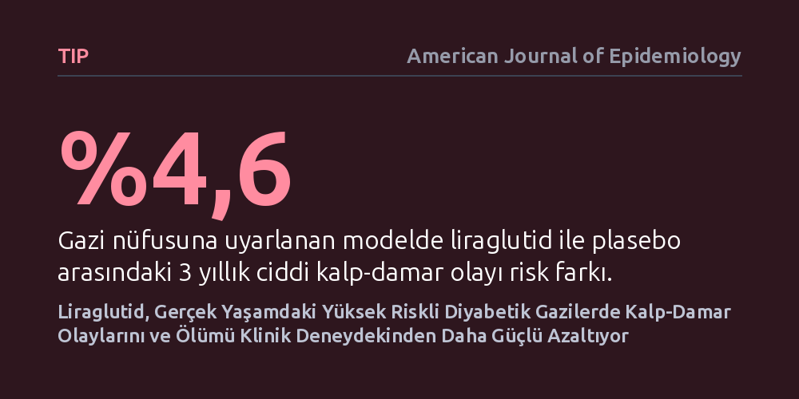

TIP · American Journal of Epidemiology · 2026-10-27
Araştırmacılar, tip 2 diyabet ilacı liraglutidin klinik deney sonuçlarının gazi hastalarındaki gerçek yaşam ortamına taşındığında kalp-damar risklerini nasıl etkilediğini inceledi. İlacın yüksek riskli gazilerde 3 yıllık ciddi kalp olaylarını ve ölümleri klinik deneydekine kıyasla daha belirgin oranda azalttığı bulundu.
Klinik deneylere genellikle dahil edilmeyen ileri yaştaki ve yüksek riskli hastaların, yeni nesil diyabet tedavilerinden beklenenden daha fazla fayda görebileceğini gösteriyor.

Tip 2 diyabet hastalarında kalp ve damar sağlığını korumak, güncel tedavinin en kritik hedeflerinden biridir. Yeni nesil diyabet ilaçları ruhsat almadan önce titiz ve randomize klinik deneylerden geçer. Ancak bu deneylere dahil edilen katılımcılar çoğunlukla daha genç, ek hastalık yükü görece az ve katı seçim kriterlerine göre dikkatle ayıklanmış bireylerden oluşur. Oysa aile hekimliklerinin veya hastane polikliniklerinin kapısından giren sıradan hastalar çok daha karmaşık ve kırılgan bir sağlık geçmişine sahiptir.
Bu durum tıp literatüründe 'dış geçerlilik' sorunu olarak adlandırılır. Bir ilacın ideal klinik deney ortamında güvenli ve etkili bulunması, her gün çok sayıda farklı ilaç kullanan ve ileri derecede kalp-damar riski taşıyan gerçek yaşam hastalarında da aynı neticede çalışacağını garanti etmez. Araştırmacılar tam da bu nedenle, yaygın biçimde reçete edilen liraglutid adlı GLP-1 benzeri ilacın klinik deney sonuçlarının, sağlık sorunları çok daha ağır olan Amerikan gazi nüfusuna uyarlandığında nasıl bir tablo sunacağını inceledi.
Araştırma ekibi, liraglutidin kalp-damar sonuçlarını değerlendiren dönüm noktası niteliğindeki plasebo kontrollü LEADER klinik deneyinin verilerini ele aldı. Bu verileri, Amerikan Gazi İşleri sağlık sisteminde kayıtlı ve diyabet tedavisi gören gerçek hasta kohortuyla eşleştirmek amacıyla 'etki aktarılabilirliği' analizi tasarlandı. Buradaki amaç, klinik deneyin sunduğu kontrollü kanıt gücünü, gazilerin gerçek sağlık profiliyle harmanlamaktı.
İki hasta grubu arasındaki yaş, cinsiyet ve ek kronik hastalıklar gibi başlangıç özelliklerini dengelemek için yaklaşık dengeleme ağırlıkları ve güçlendirilmiş ters olasılık ağırlıklandırması adı verilen ileri istatistiksel modellemeler uygulandı. Katılımcıların üç yıllık takip süresince hayatta kalma ve ciddi kalp sorunları yaşama olasılıkları bireysel düzeyde sözde-gözlemler yardımıyla modellendi. Böylece, doğrudan yeni ve maliyetli bir klinik deney yapmaya gerek kalmadan, mevcut veriler matematiksel yöntemlerle hedef gazi nüfusuna uyarlandı.
Elde edilen analiz sonuçları, liraglutidin plaseboya kıyasla kalp-damar koruyucu etkisinin gazilerde LEADER klinik deneyindekinden sayısal olarak daha belirgin olduğunu gösterdi. Orijinal LEADER deneyinde, 3 yıllık takip sonunda ciddi kalp-damar olaylarındaki mutlak risk azalması yüzde 1,6 seviyesindeyken; gazi nüfusuna ağırlıklandırılmış modelde bu risk farkı yüzde 4,6 olarak hesaplandı.
Tüm nedenlere bağlı ölüm riskinde de paralel bir eğilim gözlendi. Orijinal klinik deneyde liraglutid ile plasebo arasındaki 3 yıllık ölüm riski farkı yüzde 0,9 düzeyinde kalırken, gazi kohortuna aktarılan analizde bu fark yüzde 2,9'a çıktı. İstatistiki açıdan her iki sonuç LEADER verileriyle uyumlu bir yön sergilese de, mutlak faydanın gazi grubunda yaklaşık üç kat daha belirgin hale gelmesi dikkat çekici bir bulgu oluşturdu.
Bu sonuçlar, klinik deneylerde genellikle yeterince temsil edilmeyen yaşlı ve yüksek riskli hasta gruplarının, yeni diyabet tedavilerinden beklenenden daha büyük bir mutlak fayda sağlayabileceğine işaret ediyor. Temel risk düzeyi zaten yüksek olan bir grupta riskin belirli bir oranda düşürülmesi, mutlak sayı olarak çok daha fazla kalp krizinin ve ölümün engellenmesi anlamına gelir.
Elde edilen bulgular, sağlık sistemlerinin ve geri ödeme kurumlarının ilaç listesi politikalarını belirlerken yalnızca saf klinik deney sonuçlarına bağlı kalmaması gerektiğini hatırlatıyor. Bununla birlikte çalışma, doğrudan yeni bir hasta müdahalesi yerine istatistiksel bir ağırlıklandırma modeli sunduğundan, karar vericilerin bu verileri ihtiyatla ve diğer gerçek yaşam kanıtlarıyla birlikte değerlendirmesi gerekiyor.